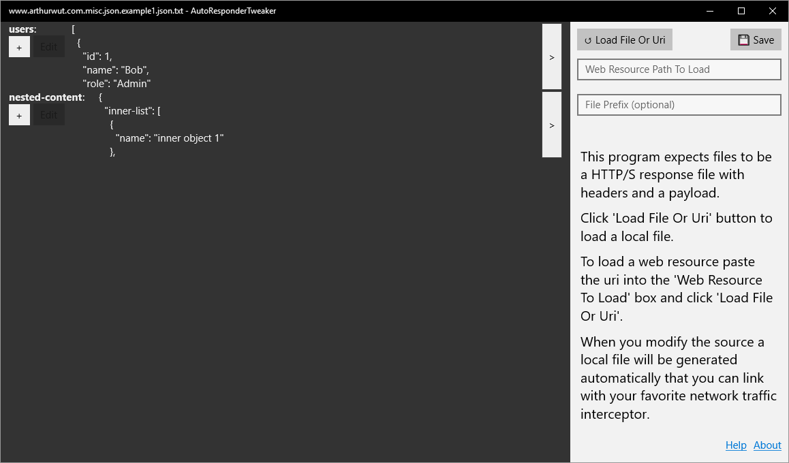
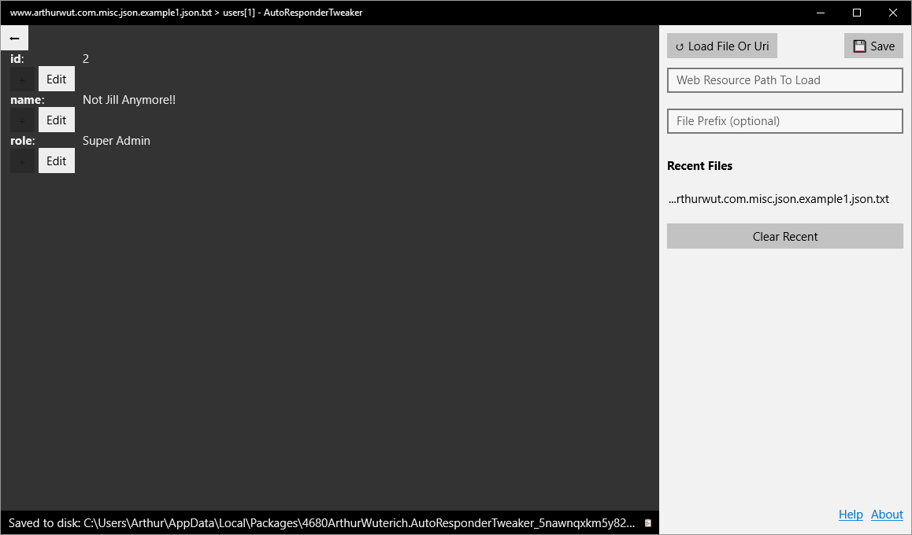
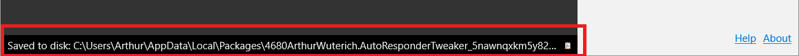
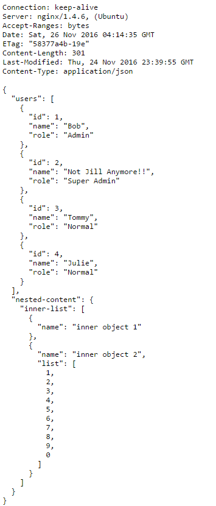

Auto Responder Tweaker
About
I made AutoResponderTweaker to help with writing HTTP/S response files for development. I found that I would frequently have to test functionality against data that did not exist and modifying the raw HTTP/S response was tedious at best.
Here is the Source Code if you want to extend or use the final product.
Help
To use the app you either need to get a local HTTP/S response or point the application at a web resource.
Here is an example resource you can use:
Loading this resource into the app shows the following:
The root object in the resource has two properties:
Both of these object are not editable by default as they are not an supported editable json type. Clicking on the  button or on the row will navigate into that object:
button or on the row will navigate into that object:
After we entered the users array we can further get to a single user and alter their properties:
After we edit the user object a local version is saved to the application's local folder as demonstrated by the lower info bar:
Clicking on the button will copy the file's path to your clipboard. You now can use this file in your favorite network interceptor program and modify the json on the fly.
Above the is modified response with an updated 'Content-Length' and the original headers. After you alter the original resource this file will be automatically updated.
Setting up a network autoresponder is a topic on its ownLicense
Distributed under the WTFPL license.